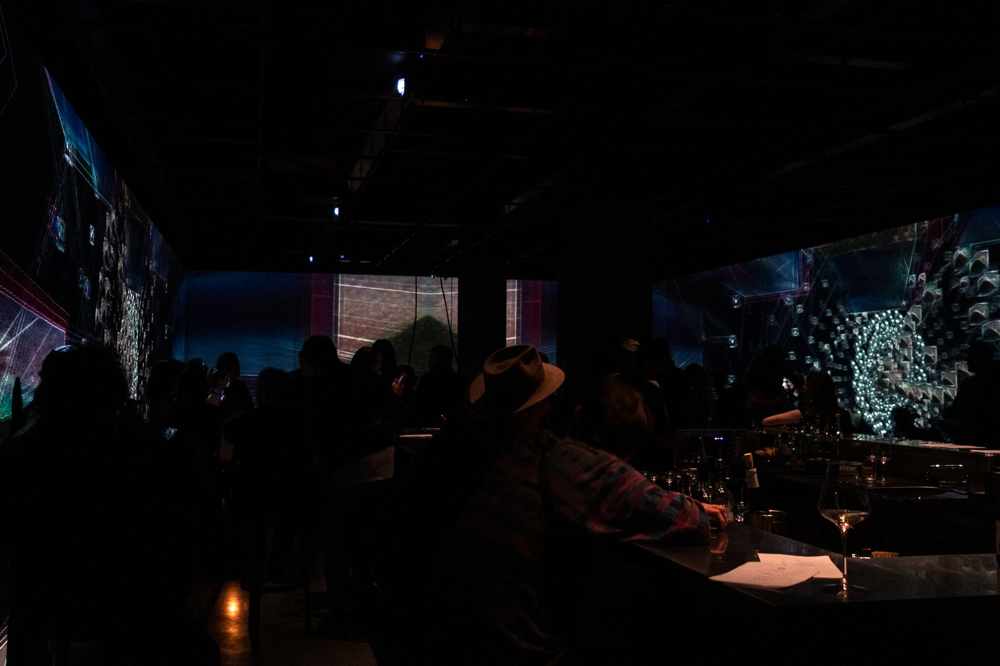
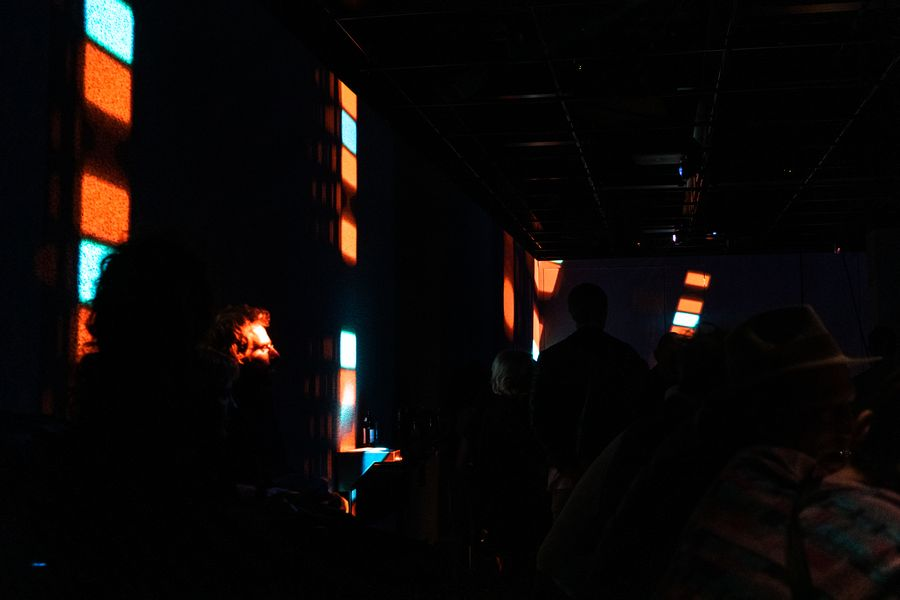
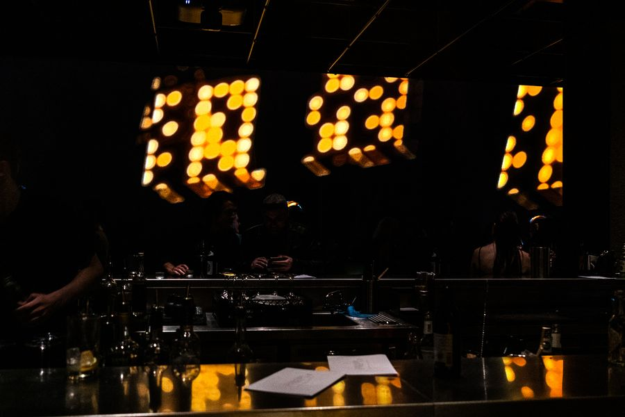
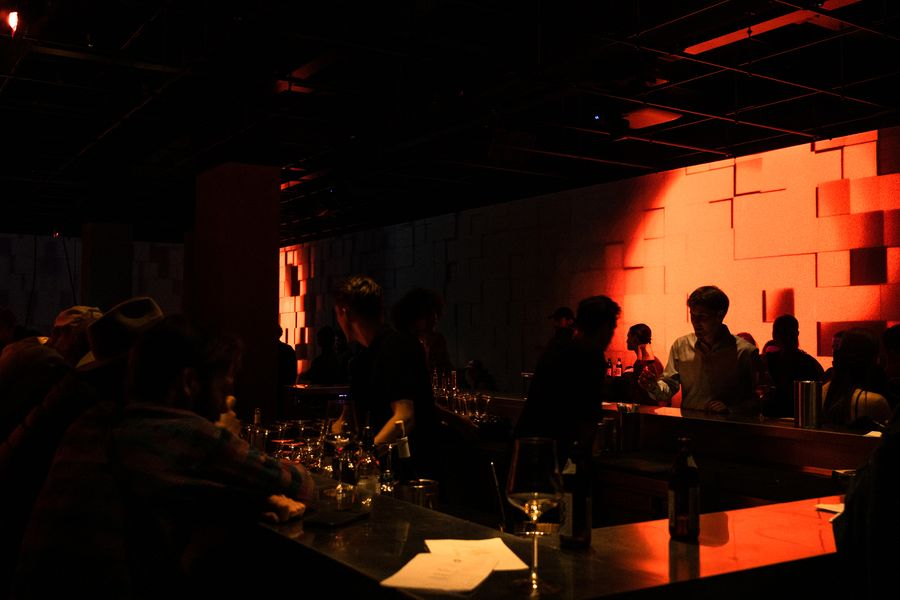
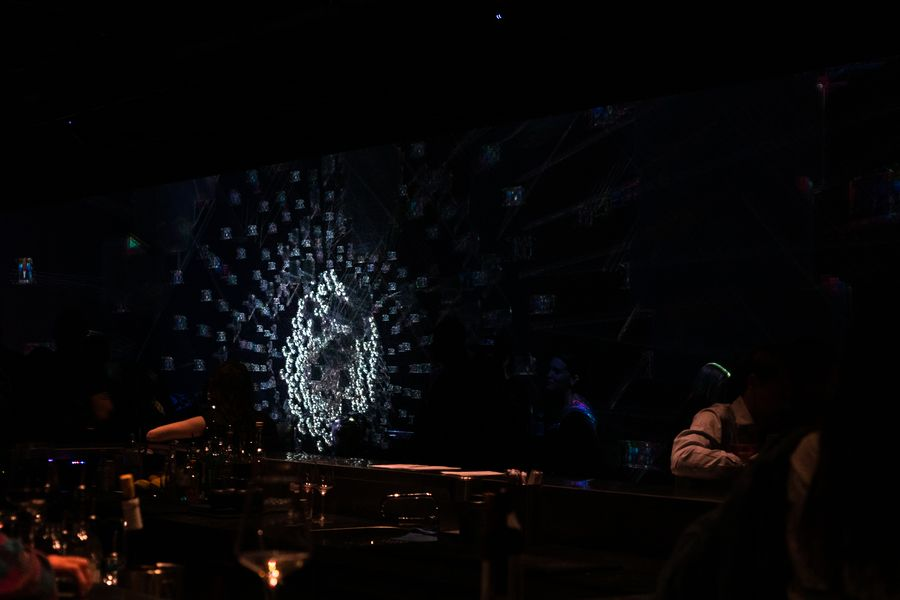
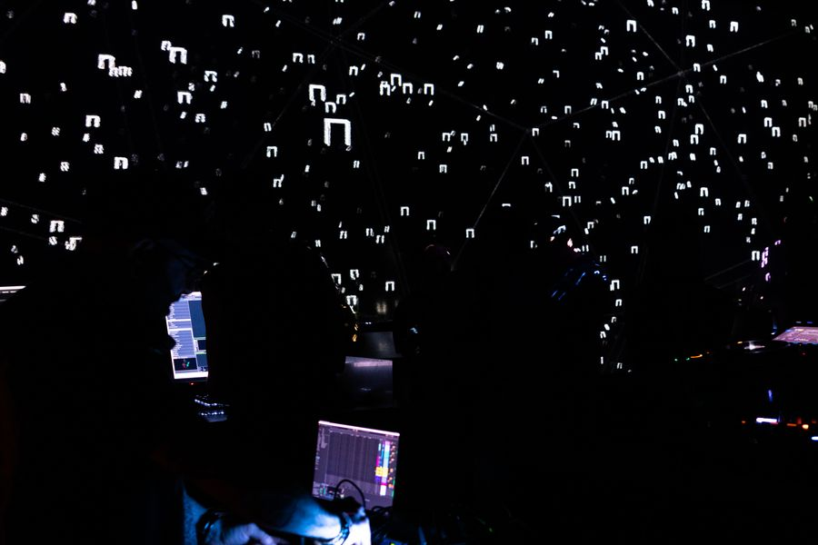
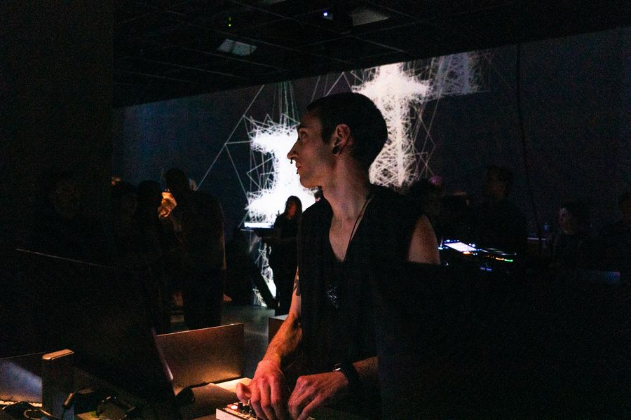
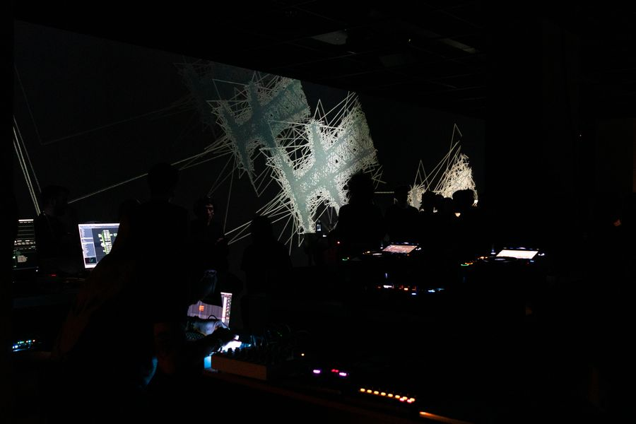
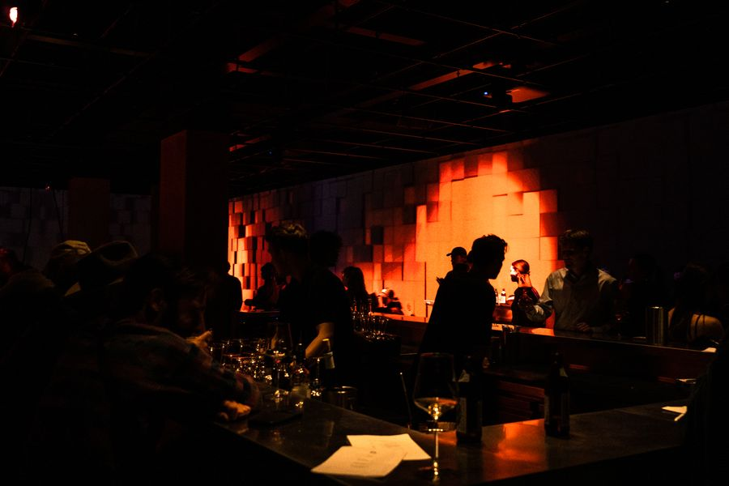

Oblivion
xmtry_studio & Evestrum_AV
A live audio-visual set for a room with no edges — projection across every wall, and sound built to sit inside it rather than in front of it.
The audio is performed live: hardware modular synthesis, granular processing of deeply researched samples, long reverberation. The visual side is Francesco Della Toffola's — immersive wireframe geometry that breathes with the low end and collapses on the transients.
The interest is in what happens to a crowd when the architecture stops being architecture. People stop watching the wall and start occupying the piece; the set is paced for that shift rather than for a drop.
- SoundHardware modular synthesis, granular processing, ambient / drone
- VisualsReal-time immersive wireframe geometry — xmtry_studio
- SpaceFully wrapped projection, Studio1111 Berlin
- FormatLive performance, audio and visuals driven together









Credits
- Audio & sound designEmanuele Musca — Evestrum
- Immersive visualsFrancesco Della Toffola — xmtry_studio
- VenueStudio1111, Berlin
- PhotographyLea Brugnoli